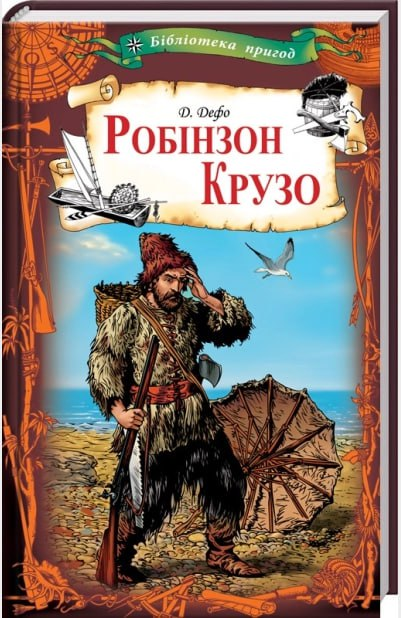
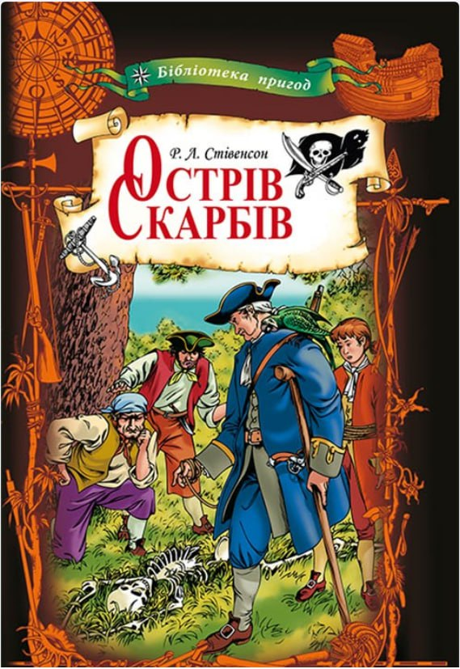
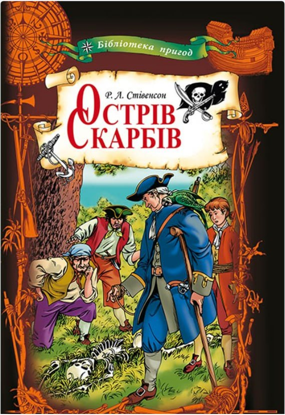

Мої улюблені книги
Мої улюблені книги
Мої улюблені книги
Чому я люблю читати
Читання книг приносить мені велике задоволення. Це дає можливість
зануритися в нові світи,дізнатися багато цікавого та розвивати свою
уяву.
Мої улюблені книги
Жанри, які я люблю
Обкладинки книг
Де купити ці книги
Інформація про книги
- Робінзон Крузо - Д. Дефо
- Гаррі Поттер і філософський камінь - Дж. К. Ролінг
- Острів Скарбів - Д. Дефо
- Пригодницька
- Фентезі
- Пригодницька

 

| Назва книги |
Автор |
Жанр |
| Робінзон Крузо |
Д. Дефо |
Пригодницька |
| Гаррі Поттер і філософський камінь |
Дж. К. Ролінг |
Фентезі |
| Острів скарбів |
Д. Дефо |
Пригодницька |